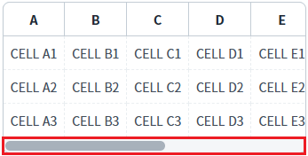
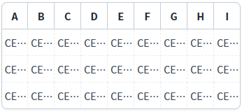
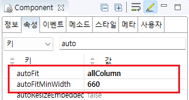

GridView의 'autoFitMinWidth'의 속성을 사용하여, GridView의 너비가 특정 값 이하일 때 'autoFit' 기능이 해제되도록 설정한 예제입니다.
'autoFitMinWidth' 속성은 GridView의 너비가 'autoFitMinWidth' 속성의 설정 값 이하가 되면 'autoFit' 기능을 해제하여 가로 스크롤을 생성해주는 기능입니다. 이 기능은 GridView의 너비가 가변형으로 구성된 경우 유용합니다.
'autoFit' 속성의 설정 값이 'allColumn'으로 지정되어야 동작합니다.
autoFitMinWidth 속성 설정
autoFitMinWidth 속성 미설정
예제 영역 'autoFitMinWidth 속성 설정'에 구성된 GridView에서 테스트합니다.1
실행된 결과를 확인합니다.
GridView에 가로 스크롤이 생성되어 있습니다.
Image 1.브라우저(Chrome) 실행 예시

예제 영역 'autoFitMinWidth 속성 미설정'에 구성된 GridView에서 테스트합니다.1
실행된 결과를 확인합니다.
GridView에 가로 스크롤이 없이 컬럼의 폭이 GridView의 너비에 맞춰 자동 조절되어 있습니다.
Image 2.브라우저(Chrome) 실행 예시

1
GridView의 속성을 정의합니다.
[필수] autoFit="allColumn"
모든 컬럼의 너비를 자동 조절
[필수] autoFitMinWidth="너비 값"
GridView의 최소 너비. (단위: px)
예시) autoFitMinWidth="660" //660px 이하일 때 autoFit 기능 사용 안함
Image 3.웹스퀘어 스튜디오의 Component View - 속성 설정 예시

Example 1.Source
<!-- gridView 의 소스 본문 예시 --> <w2:gridView autoFitMinWidth="660" autoFit="allColumn" dataList="data:dlt_exam" style="height: 90px;"> <!-- 중략 --> </w2:gridView>
autoFit
autoFitMinWidth